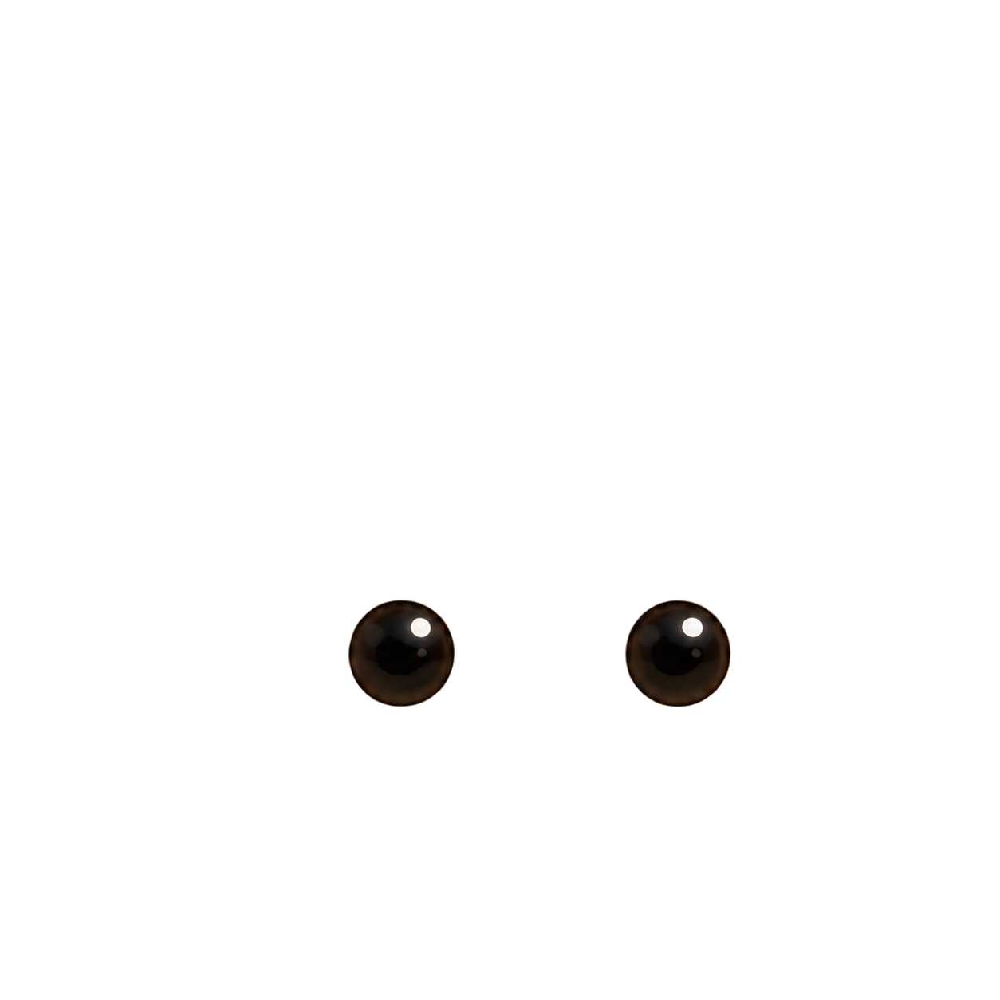
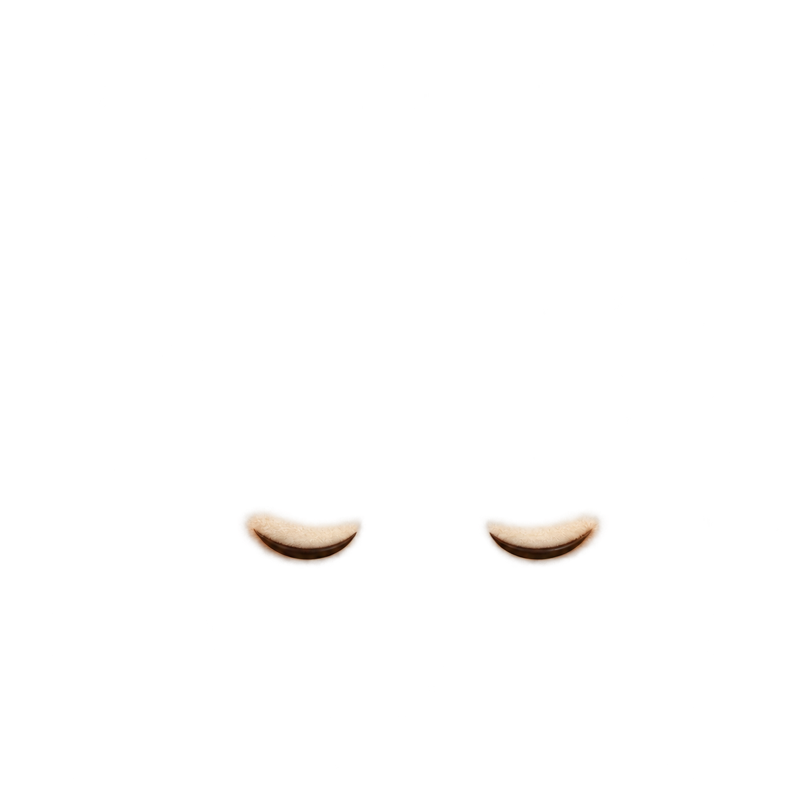
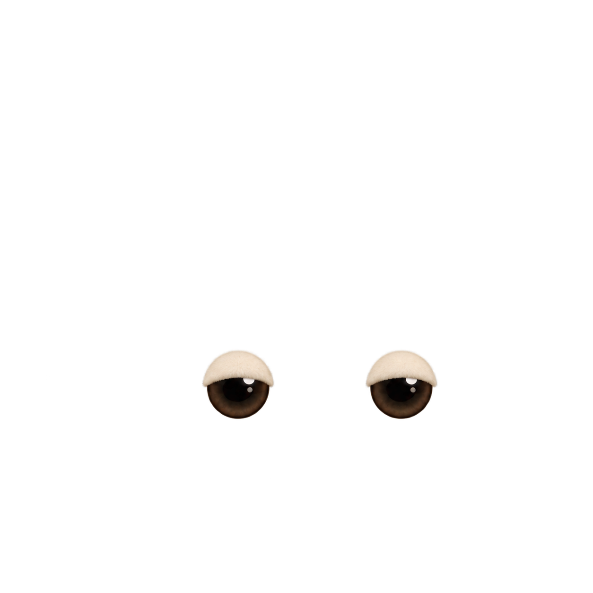
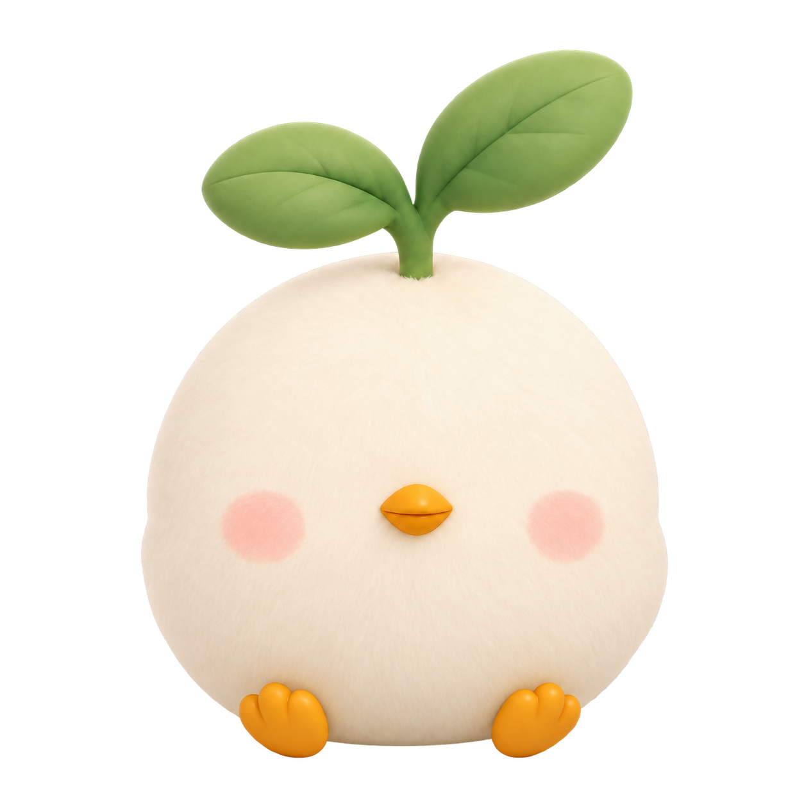
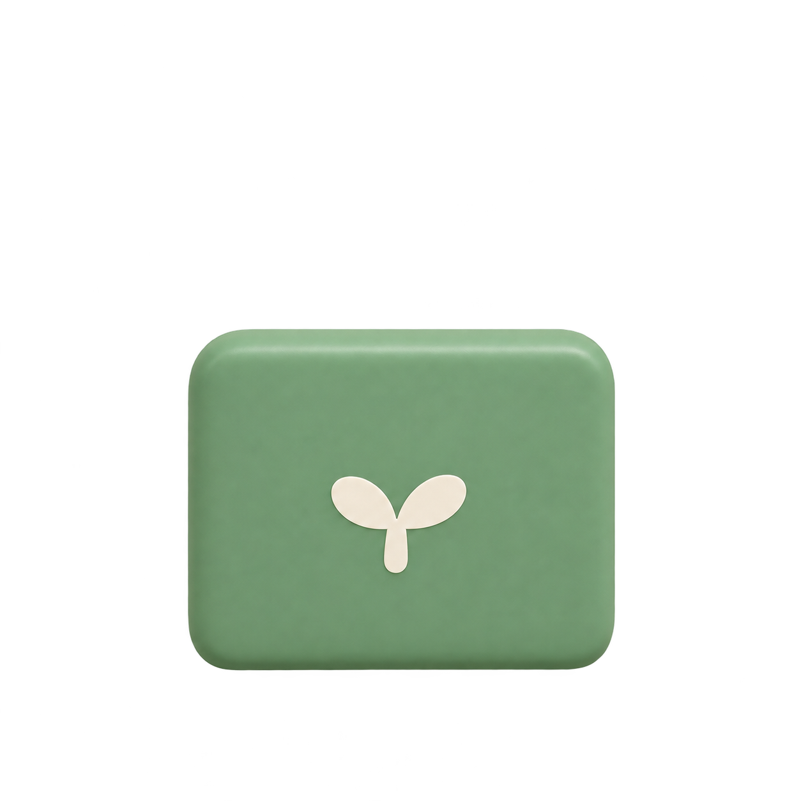
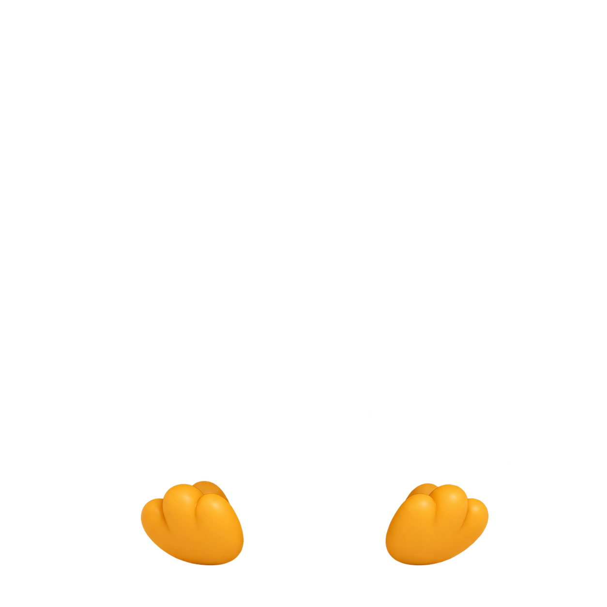

원본에서 가려진 픽셀을 새로 그렸습니다. 기존 픽셀의 무손실 복구라고 주장하지 않습니다. 눈·손은 한 PNG에 두 부품을 담은 아틀라스이며, 실제 레이어는 각각 분리해 표시합니다.
body · 1254×1254 · RGBA

openPair · 1254×1254 · RGBA

closedPair · 1254×1254 · RGBA

halfPair · 1254×1254 · RGBA

torso · 1254×1254 · RGBA

armPair · 1254×1254 · RGBA

tablet · 1254×1254 · RGBA

feetPair · 1254×1254 · RGBA
손·태블릿 독립 움직임 · 최종 파일럿
iPhone Simulator의 실제 Core Animation presentation 프레임 104장을 각20fps로 묶었습니다. 기본 피오의 앞발 가림을 수정한 버전입니다. 눈과 손·태블릿 그룹은 몸통과 별도로 움직입니다. 두 손은 태블릿과 잡기 관절을 공유하며, 자유로운 손 인사는 아닙니다. DEBUG 검토 후보이며 Release에는 눈 전용 버전만 연결했습니다.
기본 · 실제 UIKit 재생 5.2초크리스마스 · 실제 UIKit 재생 5.2초
카페 · 실제 iPhone Simulator 재생
한복·우주복·카페 · 추가 파일럿
Mac 네이티브의 실제 회전 극점입니다. 렌더링 검사 통과와 별개로 원화의 관절·비율을 검토합니다. 우주복의 작은 장갑·중복 팔 인상을 새 짧은 소매 원화로 교정했습니다. 아래 첫 파일럿은 교정 전 기록이며, 최종 14종 표에서 교정본을 확인할 수 있습니다. 손 후보는 Release에 적용하지 않았습니다.
한복 · 220pt · dark · +hold우주복 · 220pt · dark · +hold카페 · 220pt · dark · +hold
최종 14종 · 실제 iPhone Simulator 클라우드 후보
동일한220pt 밝은 배경, 실제 재생 프레임입니다. 눈·손·태블릿은 분리되어 있지만 손 두 개는 하나의 잡기 관절로 함께 움직입니다. 손 Release 통합/휴가 완성을 의미하지 않습니다.
기본 · 독립 눈 / 잡기 관절 후보벚꽃 · 독립 눈 / 잡기 관절 후보여름휴가 · 독립 눈 / 잡기 관절 후보가을 · 독립 눈 / 잡기 관절 후보겨울 · 독립 눈 / 잡기 관절 후보할로윈 · 독립 눈 / 잡기 관절 후보크리스마스 · 독립 눈 / 잡기 관절 후보한복 · 독립 눈 / 잡기 관절 후보카페 · 독립 눈 / 잡기 관절 후보학생 · 독립 눈 / 잡기 관절 후보운동 · 독립 눈 / 잡기 관절 후보비 오는 날 · 독립 눈 / 잡기 관절 후보잠옷 · 독립 눈 / 잡기 관절 후보우주복 · 독립 눈 / 잡기 관절 후보
휴가 후보 · 적용 거부
품질 FAIL: 눈 주변 복원 영역이 솜 패드처럼 보입니다. 기존 휴가 화면에 적용하지 않았습니다. 낮·밤 독립 눈·손·음료·양쪽 고정 줄은 미완성입니다.
original · 네이티브 비교 · 220ptraw-patch · 네이티브 비교 · 220ptregistered-patch · 네이티브 비교 · 220pt